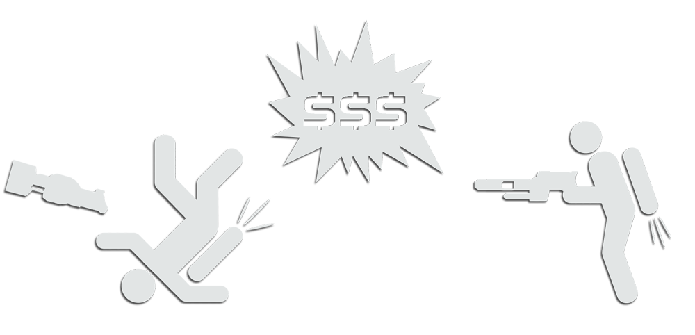

What is Lakrabbit?
Lakrabbit (“Lak”) is a special game mode in which contestants score points by competing for control over a neutral flag and inflicting specific types of damage to enemy players. The player with active control over the flag is placed on their own team and become the “rabbit” until killed by opposing players (“hunters”). Once the rabbit is eliminated their flag will drop and they will be switched back to the hunter’s team, allowing another player to grab the flag and continue the cycle. This process repeats until any player reaches 2000 points total which will end the match. Both the rabbit and those hunting the rabbit are awarded scaling point values based on the type of damage inflicted to opposing players. Lak focuses on rewarding players for their accuracy and precision, making it a favorite among enthusiasts looking to improve their shooting and take their combat abilities to the next level.
“I’ve played Rabbit before, how is Lak different?”
While both Rabbit and Lakrabbit involve keeping ownership of the flag, Lak differs fundamentally in approach. In most modes of Rabbit, players are encouraged to play “keep-away” with the flag and score most of their points by avoiding the enemy hunters. In Lak the rabbit is incentivized to fight back against enemy hunters as they can score more points through inflicting damage on opponents. Generally speaking, players will be unhappy with rabbits that spend more time running than fighting, and rabbits who engage their opposition will score more points than those who don’t.
Basics of Scoring Strategy
Rabbits are rewarded with points-over-time which accumulate as they retain control of the flag. While relatively minimal, these points can add up greatly over the course of a match. Keep in mind that every point the rabbit scores from control over the flag is a point others are denied, further lengthening scoring gaps.
In addition to points-over-time, the rabbit has a greater selection of enemy targets to shoot at than hunters, and thus can capitalize on greater flexibility over their engagements. Similarly, hunters are able to capitalize from the rabbit being forced to focus on more than one target, allowing them to benefit from surprise attacks and openings in the rabbit’s defense. While the rabbit is technically at a scoring advantage over other players, both the rabbit and the hunters can effectively score points and compete for the 2000 point victory.
With the understanding that control over the flag offers an edge in point scoring, the bulk of points a player scores will source from damage inflicted made on opposing players. This is why a player who never touches the flag can still technically win, albeit missing out on the advantages of being a rabbit. In more competitive of settings, every player should try as hard as possible to be the rabbit as often and as long as they can. In more casual settings players can find a balance of rabbit vs hunter gameplay, choosing whether to be a ball-hog or sharing the flag with others.
Restrictions in Lak
Lak differs from most other game modes in that there is a limited pool of weaponry and means by which you can score points/inflict damage on opponents. The biggest difference is that splash damage is disabled by default. As stated in the introduction above, the true spirit of Lak is in emphasis on accurate and precise shooting. Only projectiles landing directly on enemy players will score points, with the exception of hand grenades, mines, and long distance shots (which awards points but does not inflict damage). The only weapons selectable in Lak are spinfusor, shocklance, blaster, grenade-launcher, fusion mortar, hand-grenades, and mines. Players may still select between Light, Assault, and Heavy, although Light is by far at an advantage over other load-outs (you will basically never see assaults or heavies unless they are just having fun).
Out-of-bounds grid
The normal green out-of-bounds grid in Lak functions differently than most other game modes. In Lak the grid is a solid barrier which players cannot pass through. When contact with the grid is made, the player will instead bounce/reflect off the grid at an opposite angle/direction. Players will bounce with higher momentum depending on their incoming speed when making contact. Some maps such as Mini-Sun Dried have red force field across the grid which serves similar to the ropes in a wrestling ring. The two “ropes” are positioned slightly above the ground and will catch the player stopping them if they make contact. Players who touch the ropes will often be vulnerable to attack for a few minutes as it often causes players to get stuck to the rope for a second before falling.
Spawning & Invulnerability
Players will respawn in a sphere within close vicinity of the flag’s location. In more recent versions of Lak, the radius is normally smaller and players will often respawn very close to the flag or rabbit. Sometimes it can be faster to suicide and respawn near the flag than it is to catch up to it. Newly spawned players will be invulnerable to damage for a few seconds or until they fire a weapon. The rabbit will also gain temporarily invulnerability when grabbing the flag, giving them priority to make the first move or to put distance between themselves and enemy hunters.
Hunters are also afforded with unlimited invulnerability to their own discs, so long as the shot did not also damage the rabbit. This means that hunters can disc-jump as many times as they need, giving them a movement advantage against rabbits.
Power-ups
There a number of special effects that exist exclusively in Lak. These “power-ups” help keep things a bit more exciting:
Slap!/Smack!/”What did the five fingers say to the face?” – Spinfusor discs can sometimes knock an enemy player across the map when hit. When triggered, an audible “slap” noise is broadcasted to all players and the player who was “slapped” is propelled to max speed in the opposite direction of the shot. If the player was in possession of the flag when slapped it is immediately disarmed. This effect randomly triggers and increases in likelihood the closer a player is when hit by a spinfusor disc. Point-blank discs will often trigger the effect, and even splash can cause it (although no damage will be inflicted).
PSA: There’s always been a myth that specially placed shots (like headshots) are what triggers a slap. Please help spread awareness that this mechanic is based off a random-number-generator (NOT accuracy!).
Missile Party – Rabbits who connect a direct midair disc that scores at least 70 points, missiles will launch from the rabbit’s position. An audible “jingle” is broadcasted to all players along with a friendly homing-missile for each.
ZAP! Invisibility – When the rabbit achieves a backlance with a shocklance. Once triggered, the rabbit will turn completely invisible to hunters. The rabbit will still be trackable but their body invisible, making them more difficult targets to hit. Once killed or disarmed of the flag, the effect will end.
Point Calculations
Points for successful shooting will award based on various factors attributed to the weapon type being used. When players score damage a message is broadcasted to everyone displaying the values of each factor and the total points awarded. In addition to the chat message, a ringing noise (cash register, “cha-ching!”) will indicate a scoring shot was made. The message broadcasted will display in the following format:
Examples:
Lone Wolf scores 61 points [Mid-Air Disc] [Distance: 50m] [Speed: 123kph]
You receive 53 points [Mid-Air Shocklance] [Distance: 12m] [Speed: 33kph] [Height: 60m]
Factors by weapon type:
Spinfusor – Distance, Speed
Plasma Rifle – Distance, Speed
Blaster – Distance, Speed
Grenade-Launcher – Distance, Speed
Fusion Mortar – Distance, Speed
Shocklance – Distance, Speed, Height
Hand-Grenade – Distance, Speed, Accuracy
Mine – Distance, Speed, Accuracy
Types of scoring shots:
Mid-Air – Any MA landed on an opponent with one of the usable weapons. Players must be at least 5m off the ground to count.
Long-Distance - Plasma, Spinfusor, GL/Mortar – Exceptionally long range shots will score on splash. Accuracy of splash needed to score slightly differs between weapons. These do not inflict damage.
Mid-Air Mine – Mines which are triggered to explode in combination with a spinfusor disc or hand-grenade. At least 20% accuracy is required to score. These mines will inflict damage but at a reduced amount in contrast with other game modes. Only higher accuracy mine combos will have a chance of killing an enemy in 1 shot.
Hand-Grenade – The only weapon besides mines that can cause damage through splash. Damage is inflicted at any accuracy although a minimum of 30% is required to score points.
Ground Shots – Shocklance, hand-grenades, and long-distance shots made on grounded players will still award points. All other weapon types can only score on air-bound players, but will still inflict damage.
Kills – Any killing shot will award X points. No message or sound is broadcasted if not of the above types. Bonus Points are given for kills in duel mode.
Flag-based scoring:
Points-over-time – X points per X while in possession of the flag.
Mid-Air Flag Grab – Flags grabbed mid-air at least 5m above the ground will award points based on the height of the grab.
Optional Modes
Lak offers a variety of modes which by default are disabled but can be voted on. These modes are usually selected to prevent players from running or favoring the ground too much.
Duel Mode – The rabbit must make kills within X seconds or they will explode. Each kill the rabbit makes will add more time to their counter. While duel mode is active, the rabbit is not allowed to attempt a disc jump (doing so will also cause them to explode).
Pro Mode – Places further weapon/scoring restrictions past what the default game mode offers. Players are limited to using Spinfusor, Shocklance, Blaster. Often is used as a means to prevent the rabbit from running forcing them to engage hunters.
Enable/Disable Splash – Players can choose to re-enable splash damage which is turned off by default. Often is used as a means to deter players from hugging the ground.
Thank you for reading and see you in the game!
-- OMR 2020
|